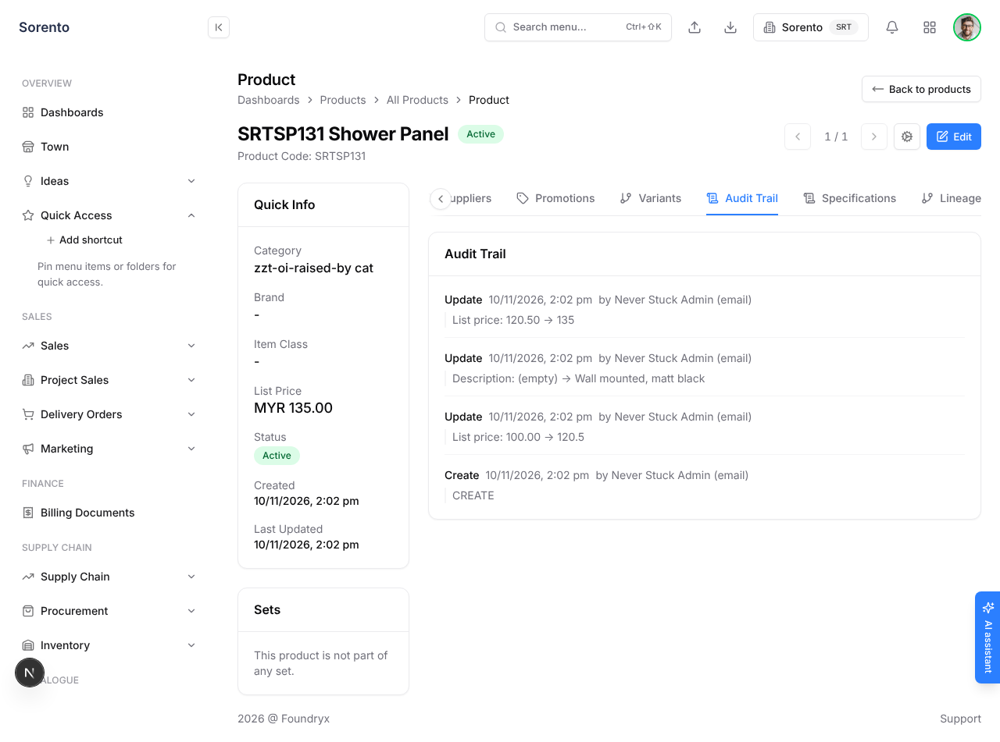
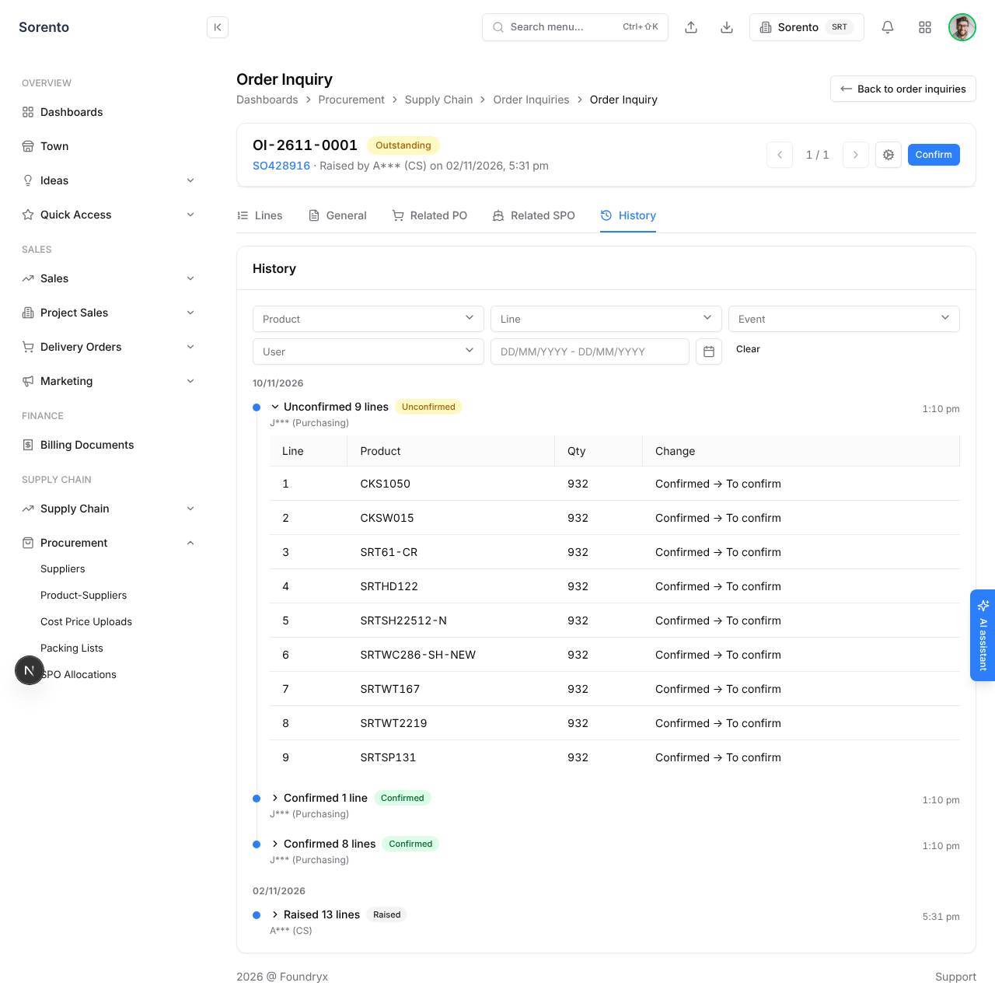
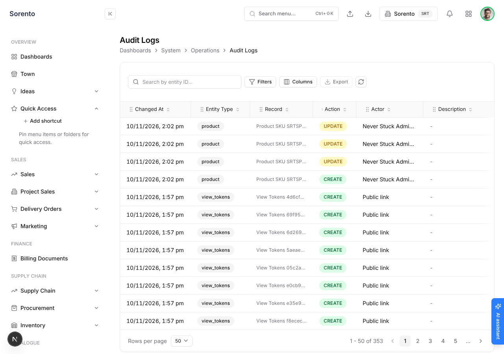
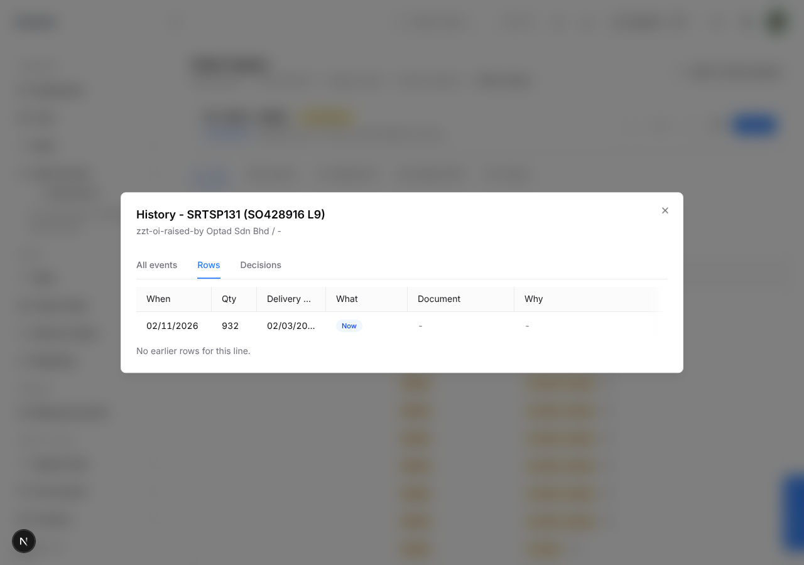

PO 202611-S0027 linked to SRTSP131, now Done
Owner, 10 Nov ~15:10 on the v1 build: "OI history why so complicated geh, our other audit trails or history page also so complicated? i want to reuse same component though". v2 answers both: the system already has a simple history (the Audit Trail tab on 8 detail pages), v1 copied the busiest one instead, and v2 makes that simple one the only one. Real OI-2611-0019 story, names masked. Pink numbers map to the notes.

Product / PO / complaint / PR / stock inquiry / sample request / NPA / spec registry: Audit Trail tab simpleOne line per change: what, when, by whom, then "List price: 120.50 → 135". No filters, no badges, no tables. components/audit/AuditTrail.tsx

v1 OI History tab (#2299, what you tested) busyCopied the SO History drawer: 5 filters + Clear, a coloured badge per event, a grid per batch. components/history/RecordHistory.tsx

System > Audit Logs admin toolA superadmin grid across every record: search, Filters, Columns, Export, entity type and action pills. Right for admins hunting across the system; wrong inside one record.

OI line History dialog (Rows / Decisions / Reserve) three viewsA grid of row versions (When, Qty, Delivery, What, Document, Why) plus two more tabs; presses never appear. OrderInquiryLineHistoryDialog.tsx
SO History drawer (Fulfilment Planning) busiestNot captured: the sandbox board has no orders. From the code: a side drawer with SO, Product, Line, Event, User and date filters plus Clear, count chips per event, an "Open email" dialog and a table per event; planning admins only. PlanningHistorySheet.tsx:504-551. v1 was built from this one.
Contacts, customers, price tags, users noneNo history on the record at all; only System > Audit Logs (superadmin) shows their changes.
Why v1 felt complicated (each item is what v2 removes):
AuditTrail, for every record; the v1 RecordHistory goes away.components/audit/AuditTrail.tsx · PurchaseOrderDetail.tsx:1415 · ProductDetail.tsx:669| Part | v1 (#2299 today) | v2 |
|---|---|---|
| Component | New RecordHistory (filters, badges, DataGrid per event) | Deleted. AuditTrail is the one component; it learns to take a list of plain entries (sentence, when, who, optional lines) besides its own audit read, and gets the "Show N lines" toggle and the one search box. |
| OI History tab | RecordHistory | AuditTrail fed by the same OI history endpoint (unchanged backend: it already writes the plain sentences and the lines) |
| Line dialog | "All events" tab with filters | "History" tab, the same AuditTrail list narrowed to the line |
| The 8 Audit Trail pages | unchanged | Same component; their entries read as sentences ("Changed list price from 120.50 to 135" instead of "Update" + "List price: 120.50 → 135"), only where that wave is built |
| Backend | History endpoint + OI root stamp | Unchanged; the response drops nothing |
Rollout after OI stays as approved: SO / Fulfilment Planning (the SO drawer keeps its admin filters for planners, its record tab uses this list), contacts and dealer access, products and spec registry, price tags, then the rest. Each wave its own PR.